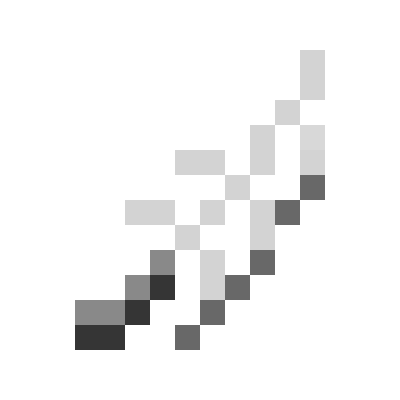

| Funky Feather |
|  |
| Special item Protects your inventory but gets consumed on death if in your hotbar. |
Funky Feathers, commonly referred to as "feathers", are items used for protecting players' inventories.
1–5 Funky Feathers can be obtained from auctions. 1–2 Funky Feathers can also be obtained from completing an Uberstreak.
If a player dies with a Funky Feather in their hotbar, their inventory will be protected. Items from the item shop are not removed and mystic items do not lose lives. The feather is consumed on death.
If the feather is in the player's inventory but not in their hotbar, it will be kept on death, but it will not protect their inventory.
Feathers apply before Divine Intervention and Divine Miracle. Even if one of them were to activate, a feather will be consumed first.